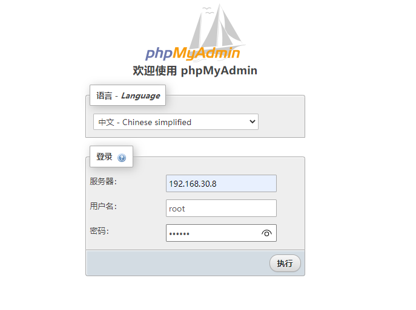
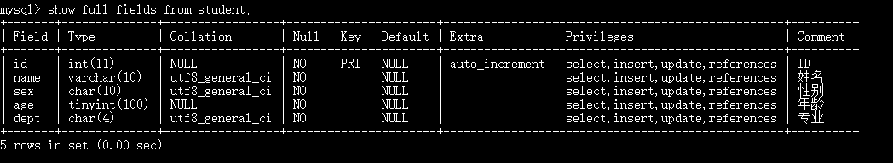

本文介绍MySQL数据库基础操作方法
MySQL 连接
shell连接
命令行连接mysql服务器：1
mysql -h 主机名 -u 用户名 -p
- -h：指定要登录的MySQL主机名，登录本机可以省略
- -u：用户名
- -p：登录密码
1 | C:\Users\10287>mysql -u root -p |
可使用exit 命令退出1
2
3
4mysql> exit
Bye
C:\Users\10287>
非交互模式：1
2
3
4
5
6
7C:\Users\10287>mysql -uroot -Dtestdb -e "show tables;" -p123456 -B
mysql: [Warning] Using a password on the command line interface can be insecure.
Tables_in_testdb
score
student
C:\Users\10287>
管理工具连接
可以使用MySQL Workbench、Navicat等数据库管理工具连接MySQL数据库，MySQL Workbench连接方法可参考MySQL数据库安装配置详细教程。
phpMyAdmin 连接
phpMyAdmin是一个以PHP为基础，以Web-Base方式架构在网站主机上的MySQL的数据库管理工具，让管理者可用Web接口 MyS管理数据库。方便实现远程管理 MySQL数据库。下面介绍Linux中phpMyAdmin安装方法。
使用docker安装phpmyadmin镜像：1
docker pull phpmyadmin/phpmyadmin
安装完成后启动phpmyadmin容器：1
2
3
4
5docker run -d \
--name myadmin \
-e PMA_ARBITRARY=1 \
-p 3080:80 \
phpmyadmin/phpmyadmin
启动MySQL服务器，我这里的MySQL服务也是使用docker启动的，安装和使用方法参考：MySQL数据库安装配置详细教程1
docker start mysql-test
浏览器访问：http://192.168.30.8:3080/， 192.168.30.8为主机IP地址，3080为映射的端口号。
输入主机名，MySQL数据库的用户名，密码

登录进去后可以对数据库进行管理
SQL 语言
SQL语言包括四种语句：
数据定义语言(data definition language，DDL)
数据操作语言(data manipulation language，DML)
数据控制语言(Data Control Language，DCL)
事务控制语言（Transaction Control Language，TCL）

创建数据库
1 | mysql> create database testdb; |
删除数据库
1 | mysql> drop database testdb; |
数据表操作
MySQL数据库操作可以下载测试数据库进行练习：https://github.com/datacharmer/test_db， 本文在本地进行创建。
mysql数据类型
常见的数据类型
- varchar：可变长度的字符串，最长255，根据实际的数据长度动态分配空间。
- char：定长字符串，最长255，分配固定长度的空间
- int：整型，最长11
- bigint：长整型
- float：单精度浮点型数据
- double：双精度浮点型数据
- date：短日期类型，包括年月日信息
- datetime：长日期类型，包括年月日时分秒信息
- clob：字符大对象，最多可以存储4G的字符串。超过255个字符的都要采用CLOB字符大对象来存储。
- blob：二进制大对象，专门用来存储图片、声音、视频等流媒体数据。
约束
在创建表的时候，可以给表中的字段加上一些约束，来保证这个表中数据的完整性、有效性。
约束包括：
- not null：非空约束，约束的字段不能为NULL
- unique：唯一性约束，约束字段不能重复，但可以为NULL
- primary key：主键约束
- foreign key：外键约束
- check：检查约束，mysql不支持，oracle支持
非空约束not null
1 | create table student( |
唯一性约束unique
需要给多个字段联合起来添加某一个约束的时候，需要使用表级约束。1
unique(name,email)
主键约束primary key
- 任何一张表都应该有主键，主键值是每一行记录的唯一标识，主键字段中的每一个值都叫做：主键值。
- 主键的特征：not null + unique（主键值不能是NULL，同时也不能重复！）
- 一张表，主键约束只能添加1个
- 主键值一般都是数字，一般都是定长的
1
2
3
4
5
6
7
8
9
10
11create table student(
id int primary key, //列级约束,单一主键
name varchar(255)
);
create table student(
id int,
name varchar(255),
email varchar(255),
primary key(id,name) //表级约束,复合主键<在实际开发中建议使用单一主键！
);外键约束foreign key
外键和主键一样也是索引的一种。不同的是MySQL会自动为所有表的主键进行索引，但是外键字段必须由用户进行明确的索引.
对于两个具有关联关系的表而言，相关联字段中主键所在的表就是主表（父表），外键所在的表就是从表（子表）
外键用来建立主表与从表的关联关系，为两个表的数据建立连接，约束两个表中数据的一致性和完整性。
主键不能包含空值，但允许在外键中出现空值
创建数据表
主键：表中记录的唯一标识符，不重复，非空
外键：字段中的值来自于其他表的主键
索引：加速表的查询
首先选择一个数据库1
2mysql> use testdb;
Database changed
进入testdb数据库后，创建一个名称为student的表1
2
3
4
5
6
7
8create table student(
id int not null auto_increment primary key COMMENT 'ID',
name varchar(10) not null COMMENT '姓名',
sex char(10) not null COMMENT '性别',
age tinyint(100) not null COMMENT '年龄',
dept char(4) not null COMMENT '专业') ENGINE=InnoDB
DEFAULT CHARSET=utf8 ROW_FORMAT=DYNAMIC
comment = '学生';
删除数据表
1 | drop table 表名; |
查看表结构
1 | mysql> desc student; |
使用以下命令是一样的效果：1
2describe student;
show columns from student;
查看详细表结构1
show full fields from student;

表结构修改
常用语法格式:ALTER TABLE <表名> [修改选项]
修改选项的语法格式如下:
1 | ADD COLUMN <列名> <类型> [after 插入位置]/*添加字段，或者在某列后插入列*/ |
修改字段长度1
alter table 表名 modify column 字段名 char(10);
1 | alter table 表名 auto_increment = 201215121; |
函数
包括字符串、日期、数字相关系统自定义函数，官方文档：https://dev.mysql.com/doc/refman/8.0/en/functions.html
数据处理函数
数据处理函数又被称为单行处理函数，一个输入对应一个输出。
常见单行处理函数
lower 转换小写
upper 转换大写1
select upper(name) as name from student;
substr：取子串，substr( 被截取的字符串, 起始下标,截取的长度)
concat：字符串的拼接
length：取长度
trim：去空格
str_to_date：将字符串转换成日期
date_format：格式化日期
format：设置千分位
round：四舍五入
rand()：生成随机数
多行处理函数
分组函数，多个输入，对应1个输出。
- count：计数
- sum：求和
- avg：平均值
- max：最大值
- min：最小值
注意：
- 分组函数自动忽略NULL，你不需要提前对NULL进行处理。
- 分组函数不能够直接使用在where子句中
- 所有的分组函数可以组合起来一起用。
- 分组函数不能直接使用在where后面，因为分组函数在使用的时候必须先分组之后才能使用。where执行的时候，还没有分组。所以where后面不能出现分组函数。
增删改查
插入数据
语法：插入数据1
insert into 表名(字段1,字段2) values(字段值1,字段值2)
1
2
3
4
5
6
7
8
9
10
11mysql> insert into Student (name, sex, age, dept) values ('张三', '男', 20, '通信');
Query OK, 1 row affected (0.45 sec)
mysql> select * from student;
+----+------+-----+-----+------+
| id | name | sex | age | dept |
+----+------+-----+-----+------+
| 1 | 张三 | 男 | 20 | 通信 |
+----+------+-----+-----+------+
1 row in set (0.03 sec)
mysql>
删除数据
语法：1
2delete from 表名 where 字段名1= 字段值1
delete from 表名 /*删除表里所有数据*/
删除1
2
3
4
5
6
7
8
9
10
11
12
13
14
15
16
17
18
19
20
21
22mysql> delete from student;
Query OK, 1 row affected (0.09 sec)
mysql> select * from student;
Empty set (0.00 sec)
mysql> insert into Student (name, sex, age, dept) values ('张三', '男', 20, '通信');
Query OK, 1 row affected (0.07 sec)
mysql> insert into Student (name, sex, age, dept) values ('李四', '男', 22, '通信');
Query OK, 1 row affected (0.07 sec)
mysql> delete from student where name='张三';
Query OK, 1 row affected (0.17 sec)
mysql> select * from student;
+----+------+-----+-----+------+
| id | name | sex | age | dept |
+----+------+-----+-----+------+
| 3 | 李四 | 男 | 22 | 通信 |
+----+------+-----+-----+------+
1 row in set (0.00 sec)
mysql>
更新数据
语法：1
2update 表名 set 字段名1=字段值1 where 字段名2=字段值2
update 表名 set 字段名1=字段值1 /*修改表里所有数据*/
更新数据1
2
3
4
5
6
7
8
9
10
11
12
13
14
15
16
17
18
19
20
21
22
23
24
25
26
27
28mysql> update student set age=20 where name='李四';
Query OK, 1 row affected (0.07 sec)
Rows matched: 1 Changed: 1 Warnings: 0
mysql> select * from student;
+----+------+-----+-----+------+
| id | name | sex | age | dept |
+----+------+-----+-----+------+
| 3 | 李四 | 男 | 20 | 通信 |
+----+------+-----+-----+------+
1 row in set (0.00 sec)
mysql> update student set age=age+1;
Query OK, 4 rows affected (0.79 sec)
Rows matched: 4 Changed: 4 Warnings: 0
mysql> select * from student;
+----+------+-----+-----+--------+
| id | name | sex | age | dept |
+----+------+-----+-----+--------+
| 1 | 李四 | 男 | 21 | 通信 |
| 2 | 张三 | 男 | 21 | 通信 |
| 3 | 王二 | 男 | 23 | 计算机 |
| 4 | 小花 | 女 | 23 | 计算机 |
+----+------+-----+-----+--------+
4 rows in set (0.04 sec)
mysql>
查询数据
再创建一个名称为score的表，记录成绩1
2
3
4
5
6
7
8create table score(
sid int not null auto_increment primary key COMMENT 'score ID',
student_id int(10) not null COMMENT '学号',
name varchar(10) not null COMMENT '姓名',
course char(10) not null COMMENT '课程',
grade tinyint(100) not null COMMENT '分数') ENGINE=InnoDB
DEFAULT CHARSET=utf8 ROW_FORMAT=DYNAMIC
comment = '成绩';
student和score两个表显示如下：1
2
3
4
5
6
7
8
9
10
11
12
13
14
15
16
17
18
19
20
21
22
23
24
25
26
27
28mysql> select * from student;
+----+------+-----+-----+--------+
| id | name | sex | age | dept |
+----+------+-----+-----+--------+
| 1 | 李四 | 男 | 20 | 通信 |
| 2 | 张三 | 男 | 20 | 通信 |
| 3 | 王二 | 男 | 22 | 计算机 |
| 4 | 小花 | 女 | 22 | 计算机 |
+----+------+-----+-----+--------+
4 rows in set (0.00 sec)
mysql> select * from score;
+-----+------------+------+------------+-------+
| sid | student_id | name | course | grade |
+-----+------------+------+------------+-------+
| 1 | 1 | 李四 | 高数 | 90 |
| 2 | 1 | 李四 | 英语 | 92 |
| 3 | 1 | 李四 | 经济学基础 | 88 |
| 4 | 2 | 张三 | 高数 | 80 |
| 5 | 2 | 张三 | 英语 | 85 |
| 6 | 2 | 张三 | 经济学基础 | 93 |
| 7 | 3 | 王二 | 高数 | 82 |
| 8 | 3 | 王二 | 英语 | 98 |
| 9 | 3 | 王二 | 经济学基础 | 80 |
+-----+------------+------+------------+-------+
9 rows in set (0.00 sec)
mysql>
简单查询
查询语法：
1 | select * from 表名 |
1 | mysql> select * from student; |
where 条件查询
where 关键词查询：select 列名称 from 表名称 where 条件;
where关键词支持如下运算：
- 比较：=、>、<、>=、<>、!=
- is [not] null、in、like
- 支持not查询， or 和 and 组合查询
- 范围限定：where age between 10 and 20;
- 子集限定：where course in (‘高数’,’英语’);
1 | mysql> select * from student where age > 20; |
排序
- desc 降序
- asc 升序
1
2
3
4
5
6
7
8
9
10
11
12
13
14
15
16
17mysql> select * from score order by grade desc;
+-----+------------+------+------------+-------+
| sid | student_id | name | course | grade |
+-----+------------+------+------------+-------+
| 8 | 3 | 王二 | 英语 | 98 |
| 6 | 2 | 张三 | 经济学基础 | 93 |
| 2 | 1 | 李四 | 英语 | 92 |
| 1 | 1 | 李四 | 高数 | 90 |
| 3 | 1 | 李四 | 经济学基础 | 88 |
| 5 | 2 | 张三 | 英语 | 85 |
| 7 | 3 | 王二 | 高数 | 82 |
| 4 | 2 | 张三 | 高数 | 80 |
| 9 | 3 | 王二 | 经济学基础 | 80 |
+-----+------------+------+------------+-------+
9 rows in set (0.03 sec)
mysql>
语句执行顺序为from -> where -> select -> order by
去重
1 | mysql> select distinct name from score; |
分页
从0开始查询5个1
2
3
4
5
6
7
8
9
10
11mysql> select * from score order by grade desc limit 5 offset 0;
+-----+------------+------+------------+-------+
| sid | student_id | name | course | grade |
+-----+------------+------+------------+-------+
| 8 | 3 | 王二 | 英语 | 98 |
| 6 | 2 | 张三 | 经济学基础 | 93 |
| 2 | 1 | 李四 | 英语 | 92 |
| 1 | 1 | 李四 | 高数 | 90 |
| 3 | 1 | 李四 | 经济学基础 | 88 |
+-----+------------+------+------------+-------+
5 rows in set (0.00 sec)
聚合查询-分组查询
基本语法：group by 字段 having 条件;
having必须和group by联合使用。常用函数：count、max、min、sum、avg
1 | mysql> select count(*) from student where age>22; |
嵌套查询
嵌套查询：查询李四同学的高数成绩（注意可能存在同名的，所以可以添加学号来组合查询）1
2
3
4
5
6
7
8mysql> select student_id, name, course, grade from score where student_id in (select id from student where name='李四') and course='高数';
+------------+------+--------+-------+
| student_id | name | course | grade |
+------------+------+--------+-------+
| 1 | 李四 | 高数 | 90 |
+------------+------+--------+-------+
1 row in set (0.00 sec)
连接查询

右连接 right join
right join 是 right outer join的简写，全称右外连接，是外连接中的一种。
语句:1
SELECT * FROM student a right outer join b on a.a_id = b.b_id;
连接student和score：1
2
3
4
5
6
7
8
9
10
11
12
13
14
15
16mysql> SELECT * FROM student a right outer join score b on a.name = b.name;
+------+------+------+------+--------+-----+------------+------+------------+-------+
| id | name | sex | age | dept | sid | student_id | name | course | grade |
+------+------+------+------+--------+-----+------------+------+------------+-------+
| 1 | 李四 | 男 | 21 | 通信 | 1 | 1 | 李四 | 高数 | 90 |
| 1 | 李四 | 男 | 21 | 通信 | 2 | 1 | 李四 | 英语 | 92 |
| 1 | 李四 | 男 | 21 | 通信 | 3 | 1 | 李四 | 经济学基础 | 88 |
| 2 | 张三 | 男 | 21 | 通信 | 4 | 2 | 张三 | 高数 | 80 |
| 2 | 张三 | 男 | 21 | 通信 | 5 | 2 | 张三 | 英语 | 85 |
| 2 | 张三 | 男 | 21 | 通信 | 6 | 2 | 张三 | 经济学基础 | 93 |
| 3 | 王二 | 男 | 23 | 计算机 | 7 | 3 | 王二 | 高数 | 82 |
| 3 | 王二 | 男 | 23 | 计算机 | 8 | 3 | 王二 | 英语 | 98 |
| 3 | 王二 | 男 | 23 | 计算机 | 9 | 3 | 王二 | 经济学基础 | 80 |
+------+------+------+------+--------+-----+------------+------+------------+-------+
9 rows in set (0.09 sec)
注意：与左(外)连接相反，右(外)连接，左表(a_table)只会显示符合搜索条件的记录，而右表(b_table)的记录将会全部表示出来。左表记录不足的地方均为NULL
示例sql:1
2
3
4
5
6
7
8
9
10
11
12
13
14
15
16
17mysql> SELECT student.id, student.name, score.course, score.grade FROM student RIGHT JOIN score ON student.id = score.sid;
+------+------+------------+-------+
| id | name | course | grade |
+------+------+------------+-------+
| 1 | 李四 | 高数 | 90 |
| 2 | 张三 | 英语 | 92 |
| 3 | 王二 | 经济学基础 | 88 |
| 4 | 小花 | 高数 | 80 |
| NULL | NULL | 英语 | 85 |
| NULL | NULL | 经济学基础 | 93 |
| NULL | NULL | 高数 | 82 |
| NULL | NULL | 英语 | 98 |
| NULL | NULL | 经济学基础 | 80 |
+------+------+------------+-------+
9 rows in set (0.00 sec)
mysql>
内连接查询 inner join
语句:1
select * from a_table a inner join b_table b on a.a_id=b.b_id;
说明：组合两个表中的记录，返回关联字段相符的记录，也就是返回两个表的交集部分；inner可以省略。
内连接查询，示例sql:1
2
3
4
5
6
7
8
9
10
11
12mysql> SELECT student.id, student.name, score.course, score.grade FROM student INNER JOIN score ON student.id = score.sid;
+----+------+------------+-------+
| id | name | course | grade |
+----+------+------------+-------+
| 1 | 李四 | 高数 | 90 |
| 2 | 张三 | 英语 | 92 |
| 3 | 王二 | 经济学基础 | 88 |
| 4 | 小花 | 高数 | 80 |
+----+------+------------+-------+
4 rows in set (0.00 sec)
mysql>
左连接查询 left join
left join是 left outer join的简写,它的全称是左外连接，是外连接中的一种。
语句:1
SELECT * FROM a_table a left join b_table b ON a.a_id = b.b_id
说明：左(外)连接，左表(a_table)的记录将会全部表示出来，而右表(b_table)只会显示符合搜索条件的记录。右表记录不足的地方均为NULL。
示例sql:1
2
3
4
5
6
7
8
9
10
11
12
13
14
15
16
17
18
19
20
21
22
23
24
25
26
27
28
29mysql> SELECT student.id, student.name, score.course, score.grade FROM student LEFT JOIN score ON student.id = score.sid;
+----+------+------------+-------+
| id | name | course | grade |
+----+------+------------+-------+
| 1 | 李四 | 高数 | 90 |
| 2 | 张三 | 英语 | 92 |
| 3 | 王二 | 经济学基础 | 88 |
| 4 | 小花 | 高数 | 80 |
+----+------+------------+-------+
4 rows in set (0.00 sec)
mysql> SELECT student.id, student.name, score.course, score.grade FROM student LEFT JOIN score ON student.name = score.name;
+----+------+------------+-------+
| id | name | course | grade |
+----+------+------------+-------+
| 1 | 李四 | 高数 | 90 |
| 1 | 李四 | 英语 | 92 |
| 1 | 李四 | 经济学基础 | 88 |
| 2 | 张三 | 高数 | 80 |
| 2 | 张三 | 英语 | 85 |
| 2 | 张三 | 经济学基础 | 93 |
| 3 | 王二 | 高数 | 82 |
| 3 | 王二 | 英语 | 98 |
| 3 | 王二 | 经济学基础 | 80 |
| 4 | 小花 | NULL | NULL |
+----+------+------------+-------+
10 rows in set (0.00 sec)
mysql>
删除语句：DROP、TRUNCATE、 DELETE 的区别
前面提到了DROP、TRUNCATE、 DELETE这三个删除语句，它们有什么区别呢？
- DELETE属于DML命令，用于删除指定数据 ，执行后要进行事务提交，可以进行回滚操作。
- DROP和TRUNCATE都是DDL命令，执行后会自动提交，不能回滚
- DROP删除表记录，并释放空间；TRUNCATE删除表，并释放空间，但不删除表的定义，表的结构还在；DELETE删除整个表时，仅删除表的内容，保留表的定义，不释放空间。
- 执行速度：drop > truncate > delete
本文标题:MySQL数据库基础入门
文章作者:hiyo
文章链接:https://hiyongz.github.io/posts/database-for-mysql-operate/
许可协议:本博客文章除特别声明外，均采用CC BY-NC-ND 4.0 许可协议。转载请保留原文链接及作者。